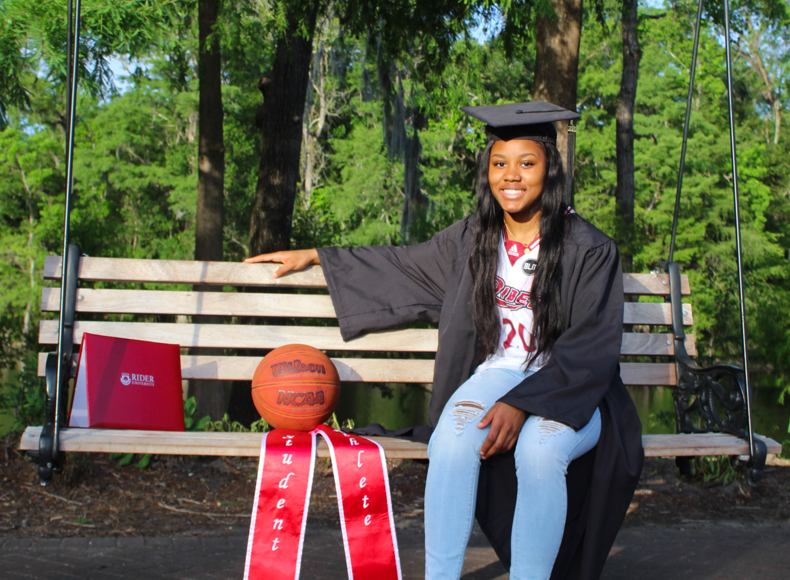
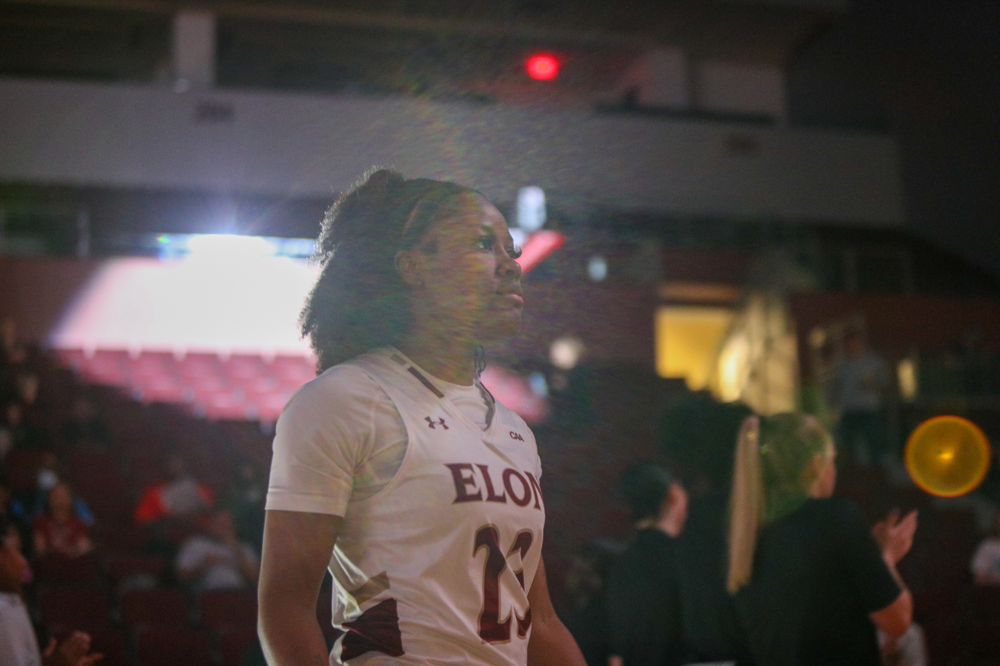
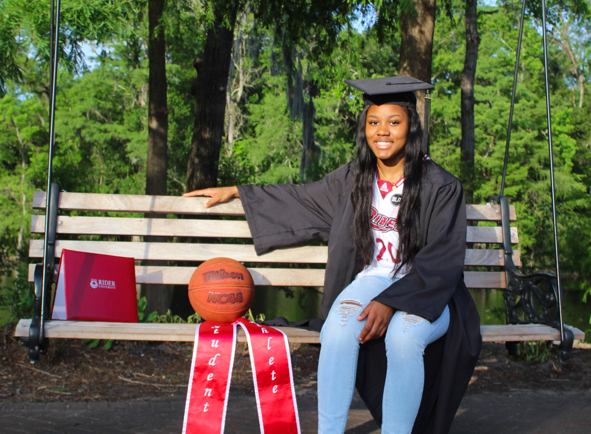
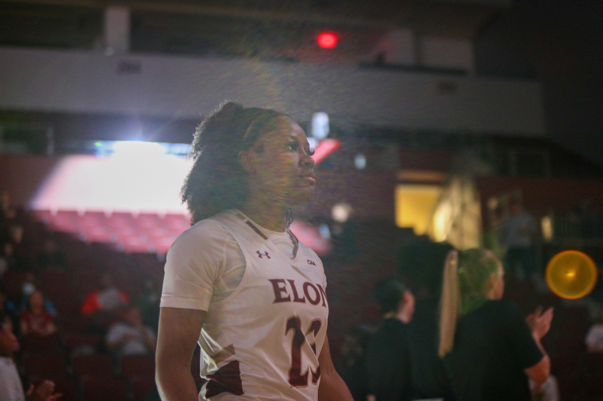
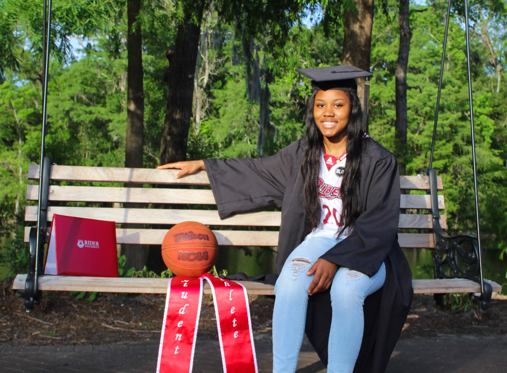
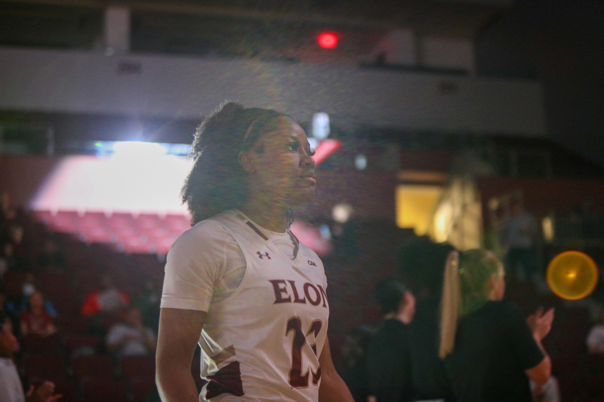

Hi, my name is Lenaejha Evans. I was born and raised in Conway,South Carolina which is 15-20 minutes away from Myrtle Beach. Over the years I have been to four schools to help with my basketball career. I went to Kansas City Kansas Community College, Pensacola State College, Rider University, and now I'm attending Elon University. I was able to come to Elon using my COVID year that the NCAA granted me. Coming to Elon was a great thing for me because not only did it help with my basketball career but also my education. I have been able to my conections with others and learn things that will help my business in the future. I will always be grateful for my time here at Elon and I look forward to revisting in the future.
I have been playing basketball since I was 9 years old. My dad and aunts played when they were younger so I believe they are a big influence on why I started playing. I began to grow a love for the sport and I knew I wanted to continue to play at the collegiate level. Entering my college years I went the JUCO route first before I ended up at a University.
I also have my own streetwear clothing brand, Legendary Ending Apparel. I started in August 2021 and have been going strong ever since. I like fashion and dressing up so I thought "why not create your own apparel?"
. I sell shorts, t-shirts, sweatsuits, jackets, and beanies. I have a plan to create more items and be able to have items that fit all genders.

